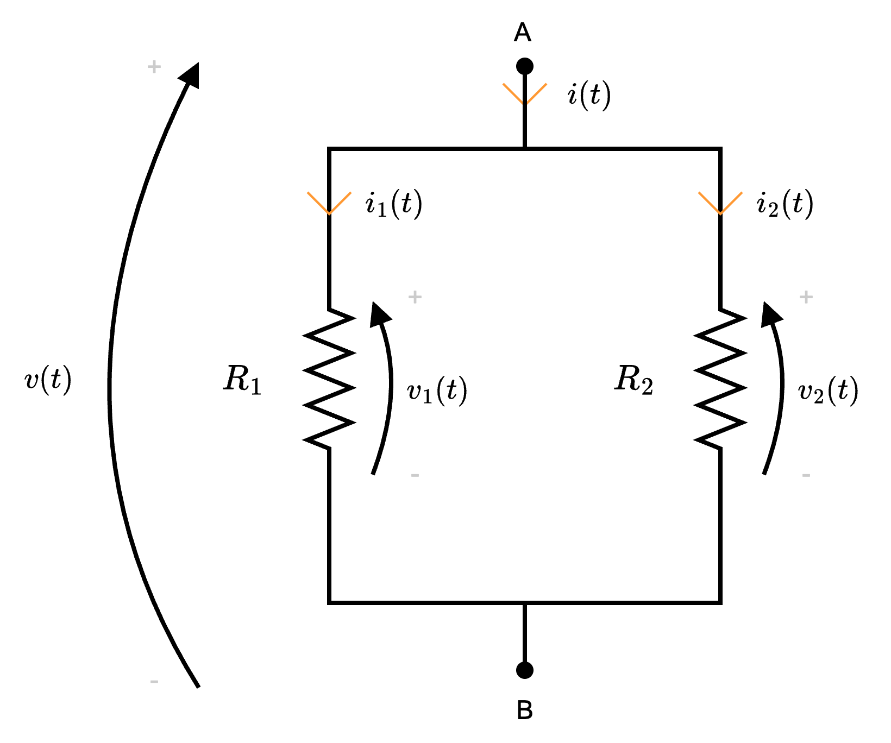

Definizione - Elementi passivi e attivi
È possibile classificare i componenti elettrici in base a se assorbono energia o meno. È possibile dividerli in:
- elementi passivi, dove l'energia assorbita è \( \geq 0\), ovvero \[ E_Q = \int_0^t p(\tau) \ d\tau \geq 0 \]
- elementi attivi, ovvero gli elementi non passivi.
Definizione - Elementi controllati in tensione e in corrente
È possibile classificare i componenti elettrici in base alla relazione tra corrente e tensione. È possibile dividerli in:
- elementi controllati in tensione, la cui funzione della corrente \( i\) è dipendente dalla tensione \( v\), ovvero \[ i = f(v) \]
- elementi controllati in corrente, la cui funzione della tensione \( v\) è dipendente dalla corrente \( i\), ovvero \[ v = f(i) \]
Definizione - Elementi dinamici e adinamici
È possibile classificare i componenti elettronici in base alla presenza o meno di "memoria". È possibile dividerli in:
- elementi dinamici (senza memoria), se la relazione tra \( i\) e \( v\) al tempo \( t\) dipende solo dai valori (di \( i\) e \( v\)) dell'istante \( t\);
- elementi adinamici (con memoria), se la relazione dipende da valori di istanti precedenti.
Definizione - Resistore
Il resistore, il cui simbolo è il seguente
Di base, si applica la convenzione dell'utilizzatore, in quanto ha potenza positiva.
Dalla 1° legge di Ohm è possibile inoltre ricavare la corrente come \[ \begin{array}{ccl} i(t) & = & \frac{1}{R} \cdot v(t) \\ & = & G \cdot v(t) \end{array} \] dove \( G = \frac{1}{R}\) è detta conduttanza (misurata in Siemens \( \mathrm{ \, S }\)).
è un bipolo caratterizzato da un valore, detto resistenza \( R\) (misurata in Ohm \( \mathrm{ \, \Omega }\)).
Di base, si applica la convenzione dell'utilizzatore, in quanto ha potenza positiva.
Equazione costitutiva - 1° legge di Ohm
Il resistore è caratterizzato dalla seguente equazione costitutiva (detta anche 1° legge di Ohm) \[ v(t) = R \cdot i(t) \] dove \( R\) è, appunto, la resistenza.Dalla 1° legge di Ohm è possibile inoltre ricavare la corrente come \[ \begin{array}{ccl} i(t) & = & \frac{1}{R} \cdot v(t) \\ & = & G \cdot v(t) \end{array} \] dove \( G = \frac{1}{R}\) è detta conduttanza (misurata in Siemens \( \mathrm{ \, S }\)).
2° legge di Ohm
Altra legge che caratterizza i resistori è la 2° legge di Ohm, ovvero \[ R = \rho \cdot \frac{l}{S} \] dove- \( \rho\) è la resistività, misurata in \( \mathrm{ \, \Omega } \cdot \mathrm{ \, m }\);
- \( l\) è la lunghezza, misurata in metri \( \mathrm{ \, m }\);
- \( S\) è la sezione, misurata in metri al quadrato \( \mathrm{ \, m^2 }\);
Potenza dissipata (effetto Joule)
La potenza dissipata da questo componente è pari a \[ \begin{array}{ccl} p(t) & = & \overbrace{v(t)}^{R \cdot i(t)} \cdot i(t) \\ & = & R \cdot I^2 \end{array} \]Energia assorbita
Considerando la funzione della potenza dissipata \( p(t)\), si ha che è possibile calcolare l'energia come \[ \begin{array}{ccl} w(t) & = & \int_0^t p(\tau) \ d\tau \\ & = & \int_0^t \underbrace{R}_{\geq 0} \cdot \underbrace{i^2(\tau)}_{\geq 0} \ d\tau \geq 0 \\ \end{array} \] Dato che l'energia assorbita è maggiore di \( 0\), si ha che è un componente passivo.Definizione - Cortocircuito
È possibile definire una situazione di cortocircuito nel caso la differenza di potenziale tra due punti sia nulla (\( v = 0\)) o che si abbia una resistenza nulla (\( R = 0\))
Infatti, considerando \[ v(t) = R \cdot i(t) \] si ha che \[ R = 0 \qquad \implies \qquad v = 0 \] Inoltre, si considera cortocircuito il collegamento tra componenti.
Definizione - Circuito aperto
È possibile definire una situazione di circuito aperto se è presente una resistenza tendente all'infinito (ad esempio la resistenza dell'aria).
Infatti, considerando \[ i(t) = \frac{v(t)}{R} \] si ha che \[ R \to +\infty \qquad \implies \qquad i = 0 \]
Ciò implica una corrente nulla.
Infatti, considerando \[ i(t) = \frac{v(t)}{R} \] si ha che \[ R \to +\infty \qquad \implies \qquad i = 0 \]
Dimostrazione - Collegamento di resistori in serie e resistenza equivalente
Data la proposizione
Enunciato:
Dati \( n\) resistori collegati in serie (ovvero che condividono la stessa corrente)
si ha che è possibile sostituirli con un unico resistore di valore \[ R_{eq} = \sum_{j = 1}^{n} R_j \]
Dimostrazione:
Per dimostrare questa proposizione consideriamo il caso di 3 resistori in serie (poi facilmente generalizzabile).
Ipotizziamo che tali resistori appartengano ad una "maglia chiusa"
Ipotizziamo che tali resistori appartengano ad una "maglia chiusa"
è quindi possibile applicare LKT, da cui si ottiene \[ v(t) - v_1(t) - v_2(t) - v_3(t) = 0 \] da cui \[ \begin{array}{ccl} v(t) & = & v_1(t) + v_2(t) + v_3(t) \\ & \overbrace{=}^{\text{eq. cost.}} & R_1 \cdot i_1(t) + R_2 \cdot i_2(t) + R_3 \cdot i_3(t) \\ & \overbrace{=}^{i_1 = i_2 = i_3 = i} & (R_1 + R_2 + R_3) \cdot i(t) \\ & = & R_{eq} \cdot i \end{array} \] dove \[ R_{eq} = R_1 + R_2 + R_3 \] Generalizzando questo risultato a \( n\) resistori in serie, si è dimostrata la proposizione.
Dimostrazione - Partitore di tensione
Data la proposizione
Enunciato:
Considerando il collegamento in serie di \( n\) resistori ai cui capi è presente una tensione \( v(t)\)
si ha che la tensione ai capi del \( k\)-esimo resistore è uguale a \[ v_k(t) = v(t) \cdot \frac{R_k}{R_{eq}} \]
Dimostrazione:
Per dimostrare questa proposizione consideriamo che \( v_k(t)\) è uguale a \[ v_k(t) = R_k \cdot i_k(t) \] Sappiamo inoltre che i resistori sono collegati in serie e, quindi, condividono la stessa corrente (cioè \( i_k(t) = i(t)\)) per cui \[ v_k(t) = R_k \cdot i(t) \] Considerando ora che la corrente \( i(t)\) è uguale a \[ i(t) = \frac{v(t)}{R_{eq}} \] si ha che \[ v_k(t) = R_k \cdot \overbrace{\frac{v(t)}{R_{eq}}}^i \] che dimostra la proposizione.
Dimostrazione - Collegamento di resistori in parallelo e resistenza equivalente
Data la proposizione
Enunciato:
Dati \( n\) resistori collegati in parallelo (ovvero che hanno la stessa tensione o sono collegati agli stessi nodi)
si ha che è possibile sostituirli con un unico resistore di valore \[ R_{eq} = \left( \sum_{j = 1}^{n} \frac{1}{R_j} \right)^{-1} \]
Dimostrazione:
Per dimostrare questa proposizione consideriamo il caso di 2 rami in parallelo (poi facilmente generalizzabile).
Ipotizziamo che tali resistori appartengano ad una "superficie chiusa" è quindi possibile applicare LKC, da cui si ottiene \[ i(t) - i_1(t) - i_2(t) = 0 \] da cui \[ \begin{array}{ccl} i(t) & = & i_1(t) + i_2(t) \\ & \overbrace{=}^{\text{eq. cost.}} & \frac{v_1(t)}{R_1} + \frac{v_2(t)}{R_2} \\ & \overbrace{=}^{v_1 = v_2 = v} & \frac{v(t)}{R_1} + \frac{v(t)}{R_2} \\ & = & v(t) \cdot \underbrace{\left( \frac{1}{R_1} + \frac{1}{R_2} \right)}_{\text{conduttanza equiv.}} \\ & = & v(t) \cdot G_{eq} \end{array} \] dove \( G_{eq}\) è la conduttanza equivalente ed è uguale a \[ G_{eq} = \frac{1}{R_1} + \frac{1}{R_2} \] Ricordando che \[ R_{eq} = \frac{1}{G_{eq}} \] si ha che generalizzando questo risultato a \( n\) resistori in parallelo, si è dimostrata la proposizione.
Ipotizziamo che tali resistori appartengano ad una "superficie chiusa"

Nota bene - Formula per il caso \( n = 2\)
Considerando il caso \( n = 2\), si ha che la conduttanza equivalente è uguale a \[ \begin{array}{ccl} G_{eq} & = & \frac{1}{R_1} + \frac{1}{R_2} \\ & = & \frac{R_2 + R_1}{R_1 \cdot R_2} \end{array} \] da cui è poi semplice calcolare la resistenza equivalente, uguale a \[ \begin{array}{ccl} R_{eq} & = & \frac{1}{G_{eq}} \\ & = & \frac{1}{\frac{R_2 + R_1}{R_1 \cdot R_2}} \\ & = & \frac{R_1 \cdot R_2}{R_2 + R_1} \end{array} \]
Dimostrazione - Partitore di corrente
Data la proposizione
Enunciato:
Considerando il collegamento in parallelo di \( n\) resistori nel cui nodo entra una corrente \( i\)
si ha che la corrente presente nel \( k\)-esimo ramo è uguale a \[ i_k(t) = \frac{R_{eq}}{R_k} \cdot i(t) \]
Dimostrazione:
Per dimostrare questa proposizione consideriamo che \( i_k(t)\) è uguale a \[ i_k(t) = \frac{v_k(t)}{R_k} \] Sappiamo inoltre che i resistori sono collegati in parallelo e, quindi, condividono la stessa tensione (cioè \( v_k(t) = v(t)\)) per cui \[ i_k(t) = \frac{v(t)}{R_k} \] Considerando ora che la tensione \( v(t)\) è uguale a \[ v(t) = R_{eq} \cdot i(t) \] si ha che \[ i_k(t) = \frac{\overbrace{R_{eq} \cdot i(t)}^{v(t)}}{R_k} \] che dimostra la proposizione.
Nota bene - Partitore di tensione per 2 rami
Considerando il caso specifico di due rami, si ha che la tensione \( v(t)\) è anche uguale a \[ v(t) = \frac{R_1 \cdot R_2}{R_1 + R_2} \cdot i(t) \] quindi, volendo calcolare la corrente \( i_1(t)\) si avrebbe che \[ \begin{array}{ccl} i_1(t) & = & \frac{v_1(t)}{R_1} \\ & \overset{v = v_1}{=} & \frac{v(t)}{R_1} \\ & = & \frac{\frac{R_1 \cdot R_2}{R_1 + R_2} \cdot i(t)}{R_1} \\ & = & \frac{R_2}{R_1 + R_2} \cdot i(t) \end{array} \] mentre per \( i_2(t)\) è uguale a \[ \begin{array}{ccl} i_2(t) & = & \frac{v_2(t)}{R_2} \\ & \overset{v = v_2}{=} & \frac{v(t)}{R_2} \\ & = & \frac{\frac{R_1 \cdot R_2}{R_1 + R_2} \cdot i(t)}{R_2} \\ & = & \frac{R_1}{R_1 + R_2} \cdot i(t) \end{array} \]
Definizione - Condensatore
Il condensatore, il cui simbolo è il seguente
Di base, si applica la convenzione dell'utilizzatore.
Esiste quindi una relazione tra la quantità di cariche accumulate \( Q(t)\) e la tensione, cioè \[ Q(t) = C \cdot v(t) \] Si ha cioè che le cariche accumulate sono proporzionali alla tensione con coefficiente di proporzionalità \( C\).
Partendo quindi dalla premessa \[ i(t) = \frac{d}{d t}Q(t) \] si ha che è possibile calcolare \[ \begin{array}{ccl} i(t) & = & \frac{d}{d t} \left[ C \cdot v(t) \right] \\ & = & C \cdot \frac{d}{d t} v(t) \end{array} \] Consideriamo inoltre che la capacità \( C\) è calcolabile come \[ C = \varepsilon \cdot \frac{S}{d} \] dove
Dato che utilizziamo la convenzione dell'utilizzatore, si dice che nel caso di potenza negativa il componente stia generando (ndr, cede potenza) mentre, nel caso fosse positiva il componente assorbe potenza.
Notiamo inoltre che l'energia dipende dalla tensione \( v(t)\) (detta variabile di stato), ovvero che \( v(t)\) descrive lo stato energetico, cioè la quantità di energia immagazzinata dal condensatore.
Ciò significa che non è possibile che la tensione vari istantaneamente.
La resistenza \( R_S\) modella invece le resistenze di contatto, dovuta a fenomeni "parassiti".
è un bipolo caratterizzato da un valore, detto capacità \( C\) (misurata in Farad \( F\)).
Di base, si applica la convenzione dell'utilizzatore.
Equazione costitutiva
Il condensatore è caratterizzato dalla seguente equazione costitutiva \[ i(t) = C \cdot \frac{d}{d t} v(t) \] dove \( C\) è, appunto, la capacità.Motivazione della formula e oggetto reale
Un condensatore (a facce parallele), è composto da due armature (fatte di materiale conduttore) tra cui è interposto un dielettrico (un materiale isolante). Nel caso si abbia un passaggio di elettroni, significa che in una faccia si hanno cariche positive e nell'altra cariche negative.
Esiste quindi una relazione tra la quantità di cariche accumulate \( Q(t)\) e la tensione, cioè \[ Q(t) = C \cdot v(t) \] Si ha cioè che le cariche accumulate sono proporzionali alla tensione con coefficiente di proporzionalità \( C\).
Partendo quindi dalla premessa \[ i(t) = \frac{d}{d t}Q(t) \] si ha che è possibile calcolare \[ \begin{array}{ccl} i(t) & = & \frac{d}{d t} \left[ C \cdot v(t) \right] \\ & = & C \cdot \frac{d}{d t} v(t) \end{array} \] Consideriamo inoltre che la capacità \( C\) è calcolabile come \[ C = \varepsilon \cdot \frac{S}{d} \] dove
- \( \varepsilon\) è detta costante dielettrica del mezzo, misurata in \( \frac{\mathrm{ \, F }}{\mathrm{ \, m }}\);
- \( S\) è la sezione, misurata in \( \mathrm{ \, m }^2\);
- \( d\) è la distanza tra le due armature, misurata in \( \mathrm{m}\);
Potenza istantanea
La potenza di questo componente è uguale a \[ \begin{array}{ccl} p(t) & = & v(t) \cdot \overbrace{i(t)}^{C \cdot \frac{d}{d t}v(t)} \\ & = & v(t) \cdot C \cdot \frac{d}{d t}v(t) \end{array} \] In questo caso, a differenza del resistore, si ha che la potenza può essere anche negativa, dato che la variazione di tensione \( \frac{d}{d t}v(t)\) può esserlo.Dato che utilizziamo la convenzione dell'utilizzatore, si dice che nel caso di potenza negativa il componente stia generando (ndr, cede potenza) mentre, nel caso fosse positiva il componente assorbe potenza.
Energia assorbita
Ipotizzando che l'elemento non sia dissipativo (cioè tutta l'energia generata è "restituita" al circuito, vero nel caso di elementi ideali) consideriamo di calcolare l'energia tra due istanti, cioè \[ \begin{array}{ccl} w(t_1, t_2) & = & \int_{t_1}^{t_2} p(\tau) \ d\tau \\ & = & C \cdot \int_{t_1}^{t_2} v(t) \cdot \frac{d}{d t}v(t) \ dt \end{array} \] è possibile semplificare \( dt\) (con \( \frac{1}{d t}\)) e ottenere \[ \begin{array}{ccl} w(t_1, t_2) & = & C \cdot \int_{t_1}^{t_2} v(t) \cdot \frac{d}{d t}v(t) \ dt \\ & = & C \cdot \int_{t_1}^{t_2} v(t) \ dv \\ & = & C \cdot \left[ \frac{v^2(t)}{2} \right]^{t_2}_{t_1} \\ & = & C \cdot \left[ \frac{v^2(t_2) - v^2(t_1)}{2} \right] \\ & = & \frac{1}{2} \cdot C \cdot \left[ v^2(t_2) - v^2(t_1) \right] \end{array} \] Ipotizzando che l'istante iniziale sia \( 0\) (\( t_1 = 0\)) e che sia inizialmente scarico (con tensione nulla, cioè \( v(0) = 0\)), si ha che \[ \begin{array}{ccl} w(0, t_2) & = & w(t_2) \\ & = & \frac{1}{2} \cdot C \cdot [v^2(t_2) - v^2(0)] \\ & = & \frac{1}{2} \cdot C \cdot v^2(t_2) \end{array} \] È da notare che l'energia è sempre positiva, rendendolo un elemento passivo (dato che lo consideriamo inizialmente scarico).Notiamo inoltre che l'energia dipende dalla tensione \( v(t)\) (detta variabile di stato), ovvero che \( v(t)\) descrive lo stato energetico, cioè la quantità di energia immagazzinata dal condensatore.
Variazione istantanea della tensione
Ipotizzando per assurdo che la tensione vari istantaneamente (cioè \( \frac{d}{d t}v(t) \to +\infty\)) si ha che ciò non risulta possibile, in quanto \[ \text{se} \ \frac{d}{d t}v(t) \to +\infty \quad \implies \quad p(t) = C \cdot v(t) \cdot \frac{d}{d t}v(t) \to +\infty \] ovvero si avrebbe una potenza illimitata (non possibile in natura).Ciò significa che non è possibile che la tensione vari istantaneamente.
Condensatore reale
Considerando il caso di un condensatore reale, è possibile modellarlo come È da notare che la resistenza \( R_P\) (ndr, in Parallelo) è dovuto al fatto che l'isolante tra le armature non è ideale: modelliamo ciò come una resistenza in parallelo di valore molto alto.
La resistenza \( R_S\) modella invece le resistenze di contatto, dovuta a fenomeni "parassiti".
Dimostrazione - Collegamento di condensatori in serie e capacità equivalente
Data la proposizione
Enunciato:
Dati \( n\) condensatori collegati in serie (ovvero che condividono la stessa corrente)
si ha che è possibile sostituirli con un unico condensatore di capacità \[ C_{eq} = \left( \sum_{j = 1}^{n} \frac{1}{C_j} \right)^{-1} \]
Dimostrazione:
Per dimostrare questa proposizione consideriamo il caso di 2 condensatori in serie (poi facilmente generalizzabile).
Ipotizziamo che tali condensatori appartengano ad una "maglia chiusa"
Ipotizziamo che tali condensatori appartengano ad una "maglia chiusa"
è quindi possibile applicare LKT, da cui si ottiene \[ v(t) - v_1(t) - v_2(t) = 0 \qquad \implies \qquad v(t) = v_1(t) + v_2(t) \] Derivando questo risultato, si ottiene \[ \frac{d}{d t}v(t) = \frac{d}{d t} v_1(t) + \frac{d}{d t} v_2(t) \] e, considerando l'equazione costitutiva \[ i(t) = C \cdot \frac{d}{d t}v(t) \qquad \implies \qquad \frac{d}{d t}v(t) = \frac{i(t)}{C} \] si ha che è possibile ottenere \[ \begin{array}{cclr} \frac{i}{C_{eq}} & = & \frac{i_1(t)}{C_1} + \frac{i_2(t)}{C_2} & \\ & \overbrace{=}^{i = i_1 = i_2} & \frac{i(t)}{C_1} + \frac{i(t)}{C_2} & \iff \\ i(t) \cdot \frac{1}{C_{eq}} & = & i(t) \cdot \left( \frac{1}{C_1} + \frac{1}{C_2} \right) & \iff \\ \frac{1}{C_{eq}} & = & \frac{1}{C_1} + \frac{1}{C_2} & \iff \\ C_{eq} & = & \left( \frac{1}{C_1} + \frac{1}{C_2} \right)^{-1} & \end{array} \] Generalizzando, si ha che dati \( n\) condensatori in serie, il condensatore equivalente avrà capacità uguale a \[ C_{eq} = \left( \sum_{j = 1}^n \frac{1}{C_j} \right)^{-1} \] che dimostra la proposizione.
Dimostrazione - Collegamento di condensatori in parallelo e capacità equivalente
Data la proposizione
Enunciato:
Dati \( n\) condensatori collegati in parallelo (ovvero che hanno la stessa tensione o sono collegati agli stessi nodi)
si ha che è possibile sostituirli con un unico condensatore di capacità \[ C_{eq} = \sum_{j = 1}^{n} C_j \]
Dimostrazione:
Per dimostrare questa proposizione consideriamo il caso di 2 rami in parallelo (poi facilmente generalizzabile).
Ipotizziamo che tali condensatori appartengano ad una "superficie chiusa"
Ipotizziamo che tali condensatori appartengano ad una "superficie chiusa"
è quindi possibile applicare LKC, da cui si ottiene \[ i(t) - i_1(t) - i_2(t) = 0 \] da cui \[ \begin{array}{ccl} i(t) & = & i_1(t) + i_2(t) \\ & \overbrace{=}^{\text{eq. cost.}} & C_1 \cdot \frac{d}{d t} v_1(t) + C_2 \cdot \frac{d}{d t} v_2(t) \\ & \overbrace{=}^{v_1 = v_2 = v} & C_1 \cdot \frac{d}{d t}v(t) + C_2 \cdot \frac{d}{d t}v(t) \\ & = & (C_1 + C_2) \cdot \frac{d}{d t}(t) \\ & = & C_{eq} \cdot \frac{d}{d t}v(t) \end{array} \] dove \( C_{eq}\) è la capacità equivalente ed è uguale a \[ C_{eq} = C_1 + C_2 \] Generalizzando questo risultato a \( n\) condensatori in parallelo, si è dimostrata la proposizione.
Definizione - Induttore
L'induttore, il cui simbolo è il seguente
Di base, si applica la convenzione dell'utilizzatore.
Esiste quindi una relazione tra il flusso \( \Phi\) e la corrente, cioè \[ \Phi(t) = L \cdot i(t) \] Si ha cioè che il flusso è proporzionale alla corrente con coefficiente di proporzionalità \( L\).
Partendo dalla premessa (ndr, la legge di Faraday per cui data una variazione del flusso è generata una forza elettromotrice) \[ v(t) = \frac{d \Phi}{d t}(t) \] si ha che è possibile calcolare \[ \begin{array}{ccl} v(t) & = & \frac{d}{d t} \left[ L \cdot i(t) \right] \\ & = & L \cdot \frac{d}{d t}i(t) \end{array} \] Consideriamo inoltre che l'induttanza \( L\) è calcolabile come \[ L = \frac{\mu \cdot N \cdot S}{l} \] dove, dato il solenoide, si ha che
Dato che utilizziamo la convenzione dell'utilizzatore, si dice nel caso di potenza negativa il componente stia generando (ndr, cede potenza) mentre, nel caso fosse positiva il componente assorbe potenza.
Notiamo inoltre che l'energia dipende dalla corrente \( i(t)\) (detta variabile di stato), ovvero che \( i(t)\) descrive lo stato energetico, cioè la quantità di energia immagazzinata dall'induttore.
Ciò significa che non è possibile che la corrente vari istantaneamente.
è un bipolo caratterizzato da un valore, detto induttanza \( L\) (misurata in Henry \( \mathrm{ \, H }\)).
Di base, si applica la convenzione dell'utilizzatore.
Equazione costitutiva
L'induttore è caratterizzato dalla seguente equazione costitutiva \[ v(t) = L \cdot \frac{d}{d t}i(t) \] dove \( L\) è, appunto, l'induttanza.Motivazione della formula e oggetto reale
Un induttore è composto dall'avvolgimento di un conduttore (ndr, un solenoide) attorno ad un materiale ferromagnetico. Al passaggio della corrente si crea un campo magnetico ed un flusso (detto di induzione magnetica).Esiste quindi una relazione tra il flusso \( \Phi\) e la corrente, cioè \[ \Phi(t) = L \cdot i(t) \] Si ha cioè che il flusso è proporzionale alla corrente con coefficiente di proporzionalità \( L\).
Partendo dalla premessa (ndr, la legge di Faraday per cui data una variazione del flusso è generata una forza elettromotrice) \[ v(t) = \frac{d \Phi}{d t}(t) \] si ha che è possibile calcolare \[ \begin{array}{ccl} v(t) & = & \frac{d}{d t} \left[ L \cdot i(t) \right] \\ & = & L \cdot \frac{d}{d t}i(t) \end{array} \] Consideriamo inoltre che l'induttanza \( L\) è calcolabile come \[ L = \frac{\mu \cdot N \cdot S}{l} \] dove, dato il solenoide, si ha che
- \( \mu\) è la permeabilità magnetica del materiale, misurata in \( \frac{\mathrm{ \, H }}{\mathrm{ \, m }}\);
- \( N\) è il numero di spire;
- \( l\) è la lunghezza del solenoide, misurata in \( \mathrm{ \, m }\);
- \( S\) è la sezione, misurata in \( \mathrm{ \, m }^2\);
Potenza istantanea
La potenza dissipata da questo componente è uguale a \[ \begin{array}{ccl} p(t) & = & \overbrace{v(t)}^{L \cdot \frac{d}{d t}i(t)(t)} \cdot i(t) \\ & = & L \cdot \frac{d}{d t}i(t)(t) \cdot i(t) \end{array} \] In questo caso, a differenza del resistore, si ha che la potenza può essere anche negativa dato che la variazione di corrente \( \frac{d}{d t}i(t)\) può esserlo.Dato che utilizziamo la convenzione dell'utilizzatore, si dice nel caso di potenza negativa il componente stia generando (ndr, cede potenza) mentre, nel caso fosse positiva il componente assorbe potenza.
Energia assorbita
Ipotizzando che tale elemento non sia dissipativo (cioè tutta l'energia accumulata è "restituita" al circuito, vero nel caso di elementi ideali), consideriamo di voler calcolare l'energia tra due istanti, cioè \[ \begin{array}{ccl} w(t_1, t_2) & = & \int_{t_1}^{t_2} p(\tau) \ d\tau \\ & = & L \cdot \int_{t_1}^{t_2} i(t) \cdot \frac{d}{d t} i(t) \ dt \end{array} \] è possibile semplificare \( dt\) (con \( \frac{1}{dt}\)) e ottenere \[ \begin{array}{ccl} w(t_1, t_2) & = & L \cdot \int_{t_1}^{t_2} i(t) \cdot \frac{d}{d t} i(t) \ dt \\ & = & L \cdot \int_{t_1}^{t_2} i(t) \ di \\ & = & L \cdot \left[ \frac{i^2(t)}{2} \right]^{t_2}_{t_1} \\ & = & L \cdot \left[ \frac{i^2(t_2) - i^2(t_1)}{2} \right] \\ & = & \frac{1}{2} \cdot L \cdot \left[ i^2(t_2) - i^2(t_1) \right] \end{array} \] Ipotizzando che l'istante iniziale sia \( 0\) (\( t_1 = 0\)) e che sia inizialmente scarico (con corrente nulla, cioè \( i(0) = 0\)), si ha che \[ \begin{array}{ccl} w(0, t_2) & = & \frac{1}{2} \cdot L \cdot [i^2(t_2) - i^2(0)] \\ & = & \frac{1}{2} \cdot L \cdot i^2(t_2) \end{array} \] È da notare che l'energia è sempre positiva, rendendolo un elemento passivo (dato che lo consideriamo inizialmente scarico).Notiamo inoltre che l'energia dipende dalla corrente \( i(t)\) (detta variabile di stato), ovvero che \( i(t)\) descrive lo stato energetico, cioè la quantità di energia immagazzinata dall'induttore.
Variazione istantanea della corrente
Ipotizzando per assurdo che la corrente vari istantaneamente (cioè \( \frac{d}{d t}i(t) \to +\infty\)) si ha che ciò non risulta possibile, in quanto \[ \text{se} \ \frac{d}{d t}i(t) \to +\infty \quad \implies \quad p(t) = \frac{1}{2} \cdot L \cdot i(t) \cdot \frac{d}{d t}i(t) \to +\infty \] ovvero si avrebbe una potenza illimitata (non possibile in natura).Ciò significa che non è possibile che la corrente vari istantaneamente.
Induttore reale
Considerando il caso di un induttore reale, è possibile modellarlo come È da notare che la resistenza \( R_S\) (ndr, in Serie) modella le resistenze di contatto ed è dovuta a fenomeni "parassiti".
Dimostrazione - Collegamento di induttore in serie e induttanza equivalente
Data la proposizione
Enunciato:
Dati \( n\) induttori collegati in serie (ovvero che condividono la stessa corrente)
si ha che è possibile sostituirli con un unico induttore di induttanza \[ L_{eq} = \sum_{j = 1}^{n} L_j \]
Dimostrazione:
Per dimostrare questa proposizione consideriamo il caso di 2 induttori in serie (poi facilmente generalizzabile).
Ipotizziamo che tali induttori appartengano ad una "maglia chiusa"
Ipotizziamo che tali induttori appartengano ad una "maglia chiusa"
è quindi possibile applicare LKT, da cui si ottiene \[ v(t) - v_1(t) - v_2(t) = 0 \qquad \implies \qquad v(t) = v_1(t) + v_2(t) \] da cui \[ \begin{array}{ccl} v(t) & = & v_1(t) + v_2(t) \\ & \overbrace{=}^{\text{eq. cost.}} & L_1 \cdot \frac{d}{d t}i_1(t) + L_2 \cdot \frac{d}{d t} i_2(t) \\ & \overbrace{=}^{i_1 = i_2 = i} & C_1 \cdot \frac{d}{d t}i(t) + L_2 \cdot \frac{d}{d t}i(t) \\ & = & (L_1 + L_2) \cdot \frac{d}{d t}i(t) \\ & = & L_{eq} \cdot \frac{d}{d t}i(t) \end{array} \] dove \( L_{eq}\) è l'induttanza equivalente ed è uguale a \[ L_{eq} = L_1 + L_2 \] Generalizzando questo risultato a \( n\) induttori in serie, si è dimostrata la proposizione.
Dimostrazione - Collegamento di induttori in parallelo e capacità equivalente
Data la proposizione
Enunciato:
Dati \( n\) induttori collegati in parallelo (ovvero che hanno la stessa tensione o sono collegati agli stessi nodi)
si ha che è possibile sostituirli con un unico induttore di induttanza \[ L_{eq} = \left( \sum_{j = 1}^{n} \frac{1}{L_j} \right)^{-1} \]
Dimostrazione:
Per dimostrare questa proposizione consideriamo il caso di 2 rami in parallelo (poi facilmente generalizzabile).
Ipotizziamo che tali induttori appartengano ad una "superficie chiusa" è quindi possibile applicare LKC, da cui si ottiene \[ i(t) - i_1(t) - i_2(t) = 0 \] Derivando questo risultato, si ottiene \[ \frac{d}{d t}i(t) = \frac{d}{d t}i_1(t) + \frac{d}{d t} i_2(t) \] e, considerando l'equazione costitutiva \[ v = L \cdot \frac{d}{d t}i(t) \qquad \implies \qquad \frac{d}{d t}i(t) = \frac{v(t)}{L} \] si ha che è possibile ottenere \[ \begin{array}{cclr} \frac{v(t)}{L_{eq}} & = & \frac{v_1(t)}{L_1} + \frac{v_2(t)}{L_2} & \\ & \overbrace{=}^{v = v_1 = v_2} & \frac{v(t)}{L_1} + \frac{v(t)}{L_2} & \iff \\ v(t) \cdot \frac{1}{L_{eq}} & = & v(t) \cdot \left( \frac{1}{L_1} + \frac{1}{L_2} \right) & \iff \\ \frac{1}{L_{eq}} & = & \frac{1}{L_1} + \frac{1}{L_2} & \iff \\ L_{eq} & = & \left( \frac{1}{L_1} + \frac{1}{L_2} \right)^{-1} & \end{array} \] Generalizzando, si ha che dati \( n\) induttori in parallelo, l'induttore equivalente avrà induttanza uguale a \[ L_{eq} = \left( \sum_{j = 1}^n \frac{1}{L_j} \right)^{-1} \] che dimostra la proposizione.
è quindi possibile applicare LKC, da cui si ottiene \[ i(t) - i_1(t) - i_2(t) = 0 \] Derivando questo risultato, si ottiene \[ \frac{d}{d t}i(t) = \frac{d}{d t}i_1(t) + \frac{d}{d t} i_2(t) \] e, considerando l'equazione costitutiva \[ v = L \cdot \frac{d}{d t}i(t) \qquad \implies \qquad \frac{d}{d t}i(t) = \frac{v(t)}{L} \] si ha che è possibile ottenere \[ \begin{array}{cclr} \frac{v(t)}{L_{eq}} & = & \frac{v_1(t)}{L_1} + \frac{v_2(t)}{L_2} & \\ & \overbrace{=}^{v = v_1 = v_2} & \frac{v(t)}{L_1} + \frac{v(t)}{L_2} & \iff \\ v(t) \cdot \frac{1}{L_{eq}} & = & v(t) \cdot \left( \frac{1}{L_1} + \frac{1}{L_2} \right) & \iff \\ \frac{1}{L_{eq}} & = & \frac{1}{L_1} + \frac{1}{L_2} & \iff \\ L_{eq} & = & \left( \frac{1}{L_1} + \frac{1}{L_2} \right)^{-1} & \end{array} \] Generalizzando, si ha che dati \( n\) induttori in parallelo, l'induttore equivalente avrà induttanza uguale a \[ L_{eq} = \left( \sum_{j = 1}^n \frac{1}{L_j} \right)^{-1} \] che dimostra la proposizione.
Ipotizziamo che tali induttori appartengano ad una "superficie chiusa"
Definizione - Generatore ideale di tensione
Il generatore ideale di tensione, i cui simboli sono i seguenti
Di base, si applica la convenzione del generatore.
Nella realtà, si avrebbe che il generatore limiterebbe automaticamente la corrente (se ciò non accadesse, si avrebbe una corrente molto alta che porterebbe alla fusione dei fili).
è un bipolo che permette di "imporre" una tensione indipendentemente dal circuito.
Di base, si applica la convenzione del generatore.
Equazione costitutiva
Il generatore ideale di tensione è cararatterizzato dalla seguente equazione costitutiva \[ v(t) = e \] dove \( e\) è, appunto, la tensione (misurata in Volt \( \mathrm{ \, V }\)). Come è evidente, essa è indipendente dalla corrente.Potenza dissipata
La potenza dissipata da questo componente è uguale a \[ \begin{array}{ccl} p(t) & = & \overbrace{v(t)}^{e} \cdot i(t) \\ & = & e \cdot i(t) \end{array} \]Passivazione
Considerando il caso in cui si passivi (ovvero si ponga \( e = 0 \mathrm{ \, V }\)) un generatore di tensione, si ha una situazione di cortocircuito, dato che \[ v(t) = \overbrace{e}^0 \cdot i(t) \qquad \implies \qquad v(t) = 0 \]Generatore di tensione reale
Considerando il caso di un generatore reale (ad esempio una batteria), è possibile modellarlo come È da notare che la resistenza \( R_S\) (ndr, in Serie) moedlla le resistenze di contatto ed è dovuta a fenomeni "parassiti".
Collegamento di generatori di tensione in serie
Considerando il caso di generatori di tensione collegati in serie si ha che la tensione ai capi del segmento è uguale alla somma delle tensioni generate, ovvero \[ v(t) = e_1 + e_2 \]
Collegamento di generatori di tensione in parallelo
Considerando il caso di generatori di tensione collegati in parallelo, si ha che per definizione di collegamento in parallelo, la tensione ai capi dovrebbe essere uguale. Tuttavia, dato che la tensione generata da ogni generatore potrebbe essere diverso (dato che sono indipendenti), si ha che questo collegamento non è ammesso.Nella realtà, si avrebbe che il generatore limiterebbe automaticamente la corrente (se ciò non accadesse, si avrebbe una corrente molto alta che porterebbe alla fusione dei fili).
Definizione - Generatore ideale di corrente
Il generatore ideale di corrente, i cui simboli sono i seguenti
Di base, si applica la convenzione del generatore.
è un bipolo che permette di "imporre" una corrente indipendentemente dal circuito.
Di base, si applica la convenzione del generatore.
Equazione costitutiva
Il generatore ideale di tensione è cararatterizzato dalla seguente equazione costitutiva \[ i(t) = a \] dove \( a\) è, appunto, la corrente (misurata in Ampere \( \mathrm{ \, A }\)). Come è evidente, essa è indipendente dalla tensione.Potenza dissipata
La potenza dissipata da questo componente è uguale a \[ \begin{array}{ccl} p(t) & = & v(t) \cdot \overbrace{i(t)}^a \\ & = & v(t) \cdot a \end{array} \]Passivazione
Considerando il caso in cui si passivi (ovvero si ponga \( a = 0 \mathrm{ \, A }\)) un generatore di corrente, si ha una situazione di circuito aperto, dato che \[ i(t) = v(t) \cdot \overbrace{i(t)}^0 \qquad \implies \qquad i(t) = 0 \]Collegamento di generatori di corrente in serie
Considerando il caso di generatori di corrente collegati in serie, si ha che per definizione di collegamento in serie, la corrente del lato deve essere uguale. Tuttavia, dato che la corrente generata da ogni generatore potrebbe essere diversa (dato che sono indipendenti), si ha che questo collegamento non è ammesso.Collegamento di generatori di corrente in parallelo
Considerando il caso di generatori di corrente collegati in parallelo si ha che la corrente uscente dal nodo è uguale alla somma delle correnti generate, ovvero \[ i(t) = a_1 + a_2 \]
Definizione - Generatore di tensione controllato ideale
I generatori di tensione controllati ideali, il cui simbolo è il seguente
Di base, si applica la convenzione del generatore.
Si ha inoltre che può essere:
è un bipolo che permette di "imporre" una certa tensione.
Di base, si applica la convenzione del generatore.
Si ha inoltre che può essere:
- controllato in tensione (ovvero considerando una tensione \( v_c(t)\) di un altro punto del circuito) per cui vale: \[ v(t) = a \cdot v_c(t) \]
- controllato in corrente (ovvero considerando una corrente \( i_c(t)\) di un altro punto del circuito) per cui vale: \[ v(t) = b \cdot i_c(t) \]
Definizione - Generatore di corrente controllato ideale
I generatori di corrente controllati ideali, il cui simbolo è il seguente
Di base, si applica la convenzione del generatore.
Si ha inoltre che può essere:
è un bipolo che permette di "imporre" una certa corrente.
Di base, si applica la convenzione del generatore.
Si ha inoltre che può essere:
- controllato in tensione (ovvero considerando una tensione \( v_c(t)\) di un altro punto del circuito) per cui vale: \[ i(t) = a \cdot v_c(t) \]
- controllato in corrente (ovvero considerando una corrente \( i_c(t)\) di un altro punto del circuito) per cui vale: \[ i(t) = b \cdot i_c(t) \]